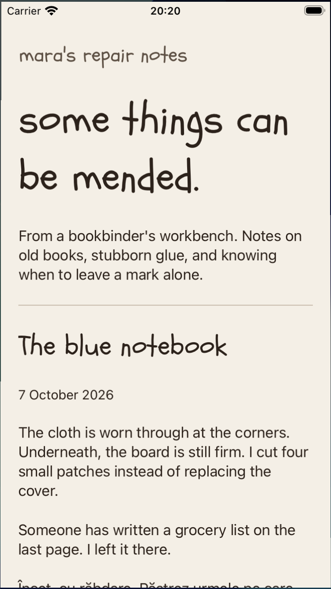
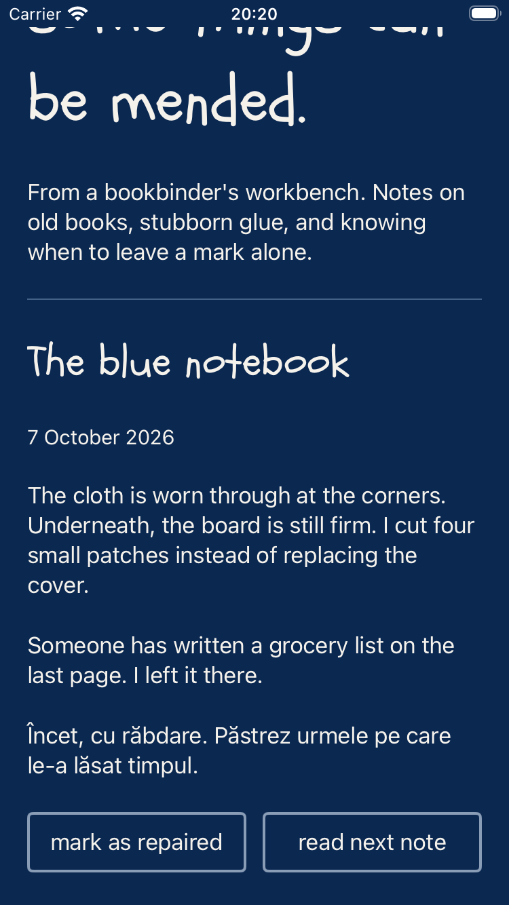
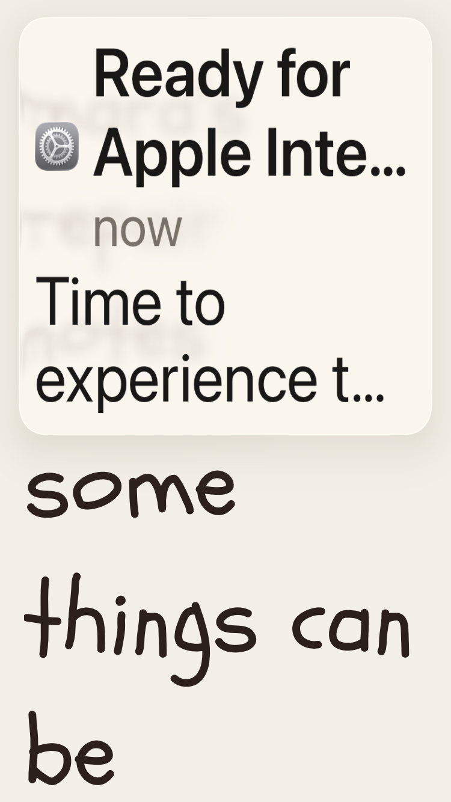
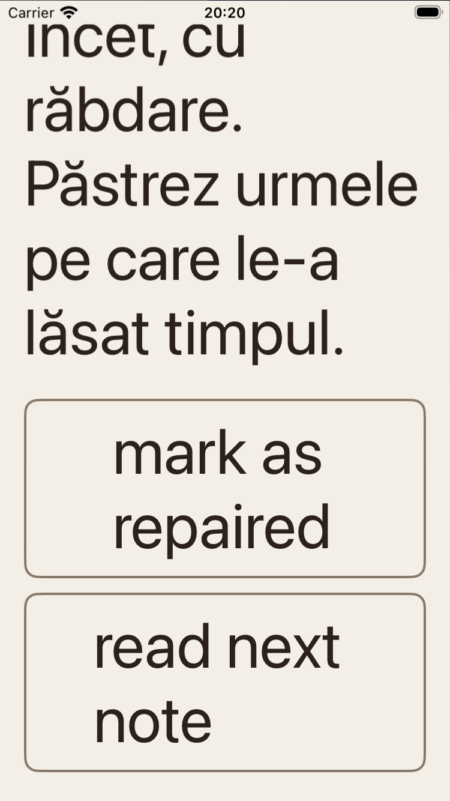
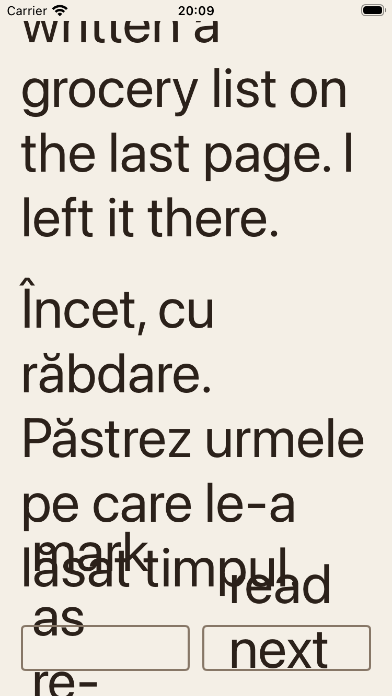
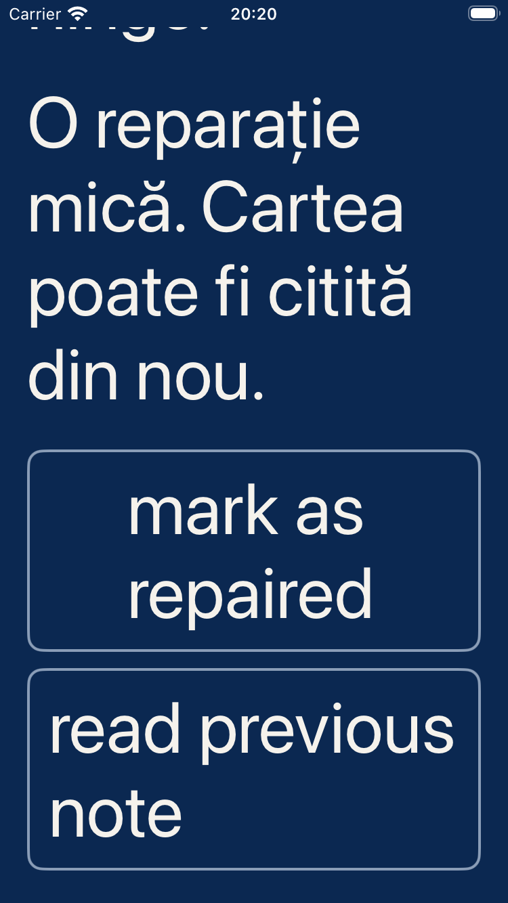

Personal room on iOS
Actual UIKit captures from a 375-point iPhone SE simulator. Schoolbell titles and native reading text scale with iOS Dynamic Type. These images are evidence, not an interactive preview of the app.
Read the outcome · Native source · Layout and event results
Ordinary text


Largest accessibility text


The first control failure


The checks include live text-size changes and programmatic control events. Touch gestures, physical devices, keyboard use and VoiceOver remain separate tests.